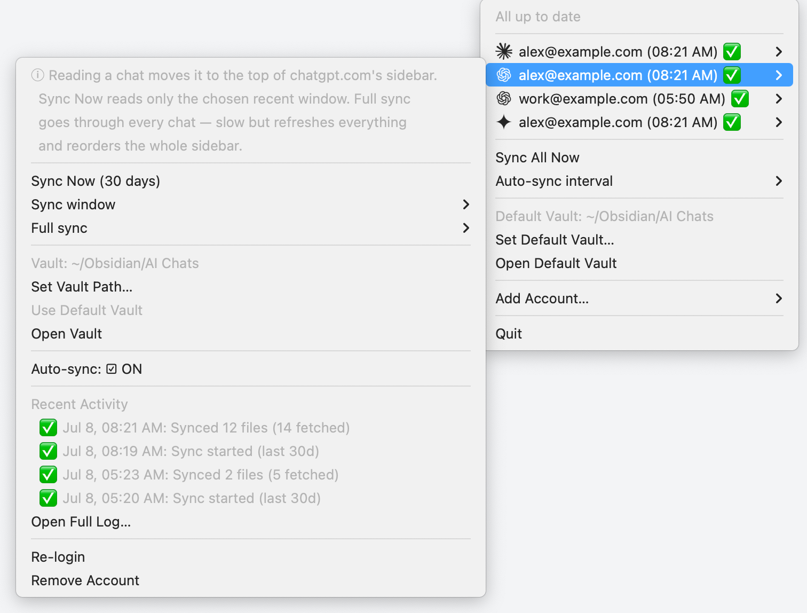

<title>chatdump — file your AI conversations into Obsidian</title>
<meta charset="UTF-8">
<meta name="viewport" content="width=device-width, initial-scale=1">
<meta name="description" content="chatdump is a free, open-source macOS menu-bar app that archives your Claude, ChatGPT, and Gemini conversations into plain Markdown files in your Obsidian vault. Local-only, no telemetry.">

<style>
  :root {
    color-scheme: light dark;

    /* -- Light palette: warm paper archive -- */
    --paper: #f4eee0;
    --paper-alt: #ece2cb;
    --paper-raised: #fbf7ec;
    --ink: #211b12;
    --ink-soft: #5c5442;
    --ink-faint: #948a6f;
    --rule: #d9cbab;
    --accent: #a8391f;
    --accent-ink: #fdf3ea;
    --accent-2: #3e6b4a;
    --shadow: 220 55% 8%;

    --font-display: ui-serif, "Iowan Old Style", "Palatino Linotype", Palatino, "Noto Serif", "Times New Roman", serif;
    --font-body: -apple-system, BlinkMacSystemFont, "Segoe UI", system-ui, sans-serif;
    --font-mono: ui-monospace, "SF Mono", Menlo, "Cascadia Mono", monospace;
  }

  @media (prefers-color-scheme: dark) {
    :root {
      --paper: #15130d;
      --paper-alt: #1d1a12;
      --paper-raised: #201d15;
      --ink: #ece2cb;
      --ink-soft: #b7ac8c;
      --ink-faint: #766c54;
      --rule: #3a3324;
      --accent: #e2825a;
      --accent-ink: #241209;
      --accent-2: #86b98d;
      --shadow: 0 0% 0%;
    }
  }

  * { box-sizing: border-box; }
  html { -webkit-text-size-adjust: 100%; }

  body {
    margin: 0;
    background-color: var(--paper);
    background-image:
      url("data:image/svg+xml,%3Csvg xmlns='http://www.w3.org/2000/svg' width='180' height='180'%3E%3Cfilter id='n'%3E%3CfeTurbulence type='fractalNoise' baseFrequency='0.85' numOctaves='2' stitchTiles='stitch'/%3E%3C/filter%3E%3Crect width='100%25' height='100%25' filter='url(%23n)' opacity='0.05'/%3E%3C/svg%3E");
    color: var(--ink);
    font-family: var(--font-body);
    font-size: 16px;
    line-height: 1.55;
    -webkit-font-smoothing: antialiased;
  }

  img { max-width: 100%; }
  a { color: inherit; }

  .wrap {
    max-width: 74rem;
    margin: 0 auto;
    padding: 0 clamp(1.25rem, 4vw, 3rem);
  }

  /* ---------- Motifs ---------- */

  .eyebrow {
    font-family: var(--font-mono);
    font-size: 0.72rem;
    letter-spacing: 0.14em;
    text-transform: uppercase;
    color: var(--accent);
    display: inline-flex;
    align-items: center;
    gap: 0.6em;
  }
  .eyebrow::before {
    content: "";
    width: 1.4em;
    height: 1px;
    background: currentColor;
    opacity: 0.7;
  }

  .leader-row {
    display: flex;
    align-items: baseline;
    gap: 0.5em;
    padding: 0.55rem 0;
    border-bottom: 1px solid var(--rule);
  }
  .leader-row .label {
    font-family: var(--font-mono);
    font-size: 0.78rem;
    letter-spacing: 0.08em;
    text-transform: uppercase;
    color: var(--ink-faint);
    white-space: nowrap;
  }
  .leader-row .fill {
    flex: 1;
    border-bottom: 1px dotted var(--ink-faint);
    height: 0.6em;
    opacity: 0.6;
  }
  .leader-row .value {
    font-size: 0.94rem;
    color: var(--ink);
    text-align: right;
  }

  .stamp {
    font-family: var(--font-mono);
    font-size: 0.66rem;
    letter-spacing: 0.12em;
    text-transform: uppercase;
    border: 1.5px solid var(--accent);
    color: var(--accent);
    border-radius: 999px;
    padding: 0.3rem 0.75rem;
    display: inline-flex;
    align-items: center;
    gap: 0.4em;
    white-space: nowrap;
  }

  section { position: relative; }

  .divider {
    border: none;
    height: 1px;
    background-image: repeating-linear-gradient(
      to right, var(--rule) 0 6px, transparent 6px 12px
    );
    margin: 0;
  }

  /* ---------- Nav ---------- */

  .nav {
    position: sticky;
    top: 0;
    z-index: 20;
    background: color-mix(in srgb, var(--paper) 88%, transparent);
    backdrop-filter: saturate(140%) blur(10px);
    border-bottom: 1px solid var(--rule);
  }
  .nav .wrap {
    display: flex;
    align-items: center;
    justify-content: space-between;
    gap: 1rem;
    padding-top: 0.85rem;
    padding-bottom: 0.85rem;
  }
  .brand {
    display: flex;
    align-items: center;
    gap: 0.6rem;
    font-family: var(--font-display);
    font-weight: 600;
    font-size: 1.15rem;
    text-decoration: none;
    color: var(--ink);
    letter-spacing: 0.01em;
  }
  .brand img { width: 26px; height: 26px; border-radius: 7px; display: block; }
  .nav-links {
    display: flex;
    align-items: center;
    gap: 1.6rem;
    font-size: 0.88rem;
    color: var(--ink-soft);
  }
  .nav-links a { text-decoration: none; }
  .nav-links a:hover { color: var(--accent); }
  .nav-cta {
    display: flex;
    align-items: center;
    gap: 0.75rem;
  }

  /* ---------- Buttons ---------- */

  .btn {
    display: inline-flex;
    align-items: center;
    gap: 0.55em;
    font-family: var(--font-body);
    font-size: 0.92rem;
    font-weight: 600;
    text-decoration: none;
    padding: 0.72rem 1.3rem;
    border-radius: 8px;
    border: 1.5px solid transparent;
    transition: transform 0.15s ease, box-shadow 0.15s ease, background 0.15s ease;
    white-space: nowrap;
  }
  .btn-primary {
    background: var(--accent);
    color: var(--accent-ink);
    box-shadow: 0 1px 0 hsl(var(--shadow) / 0.2);
  }
  .btn-primary:hover { transform: translateY(-1px); box-shadow: 0 6px 16px -6px hsl(var(--shadow) / 0.45); }
  .btn-ghost {
    border-color: var(--rule);
    color: var(--ink);
    background: transparent;
  }
  .btn-ghost:hover { border-color: var(--ink-faint); }
  .btn-small { padding: 0.5rem 0.9rem; font-size: 0.82rem; }

  /* ---------- Hero ---------- */

  .hero {
    padding: clamp(3rem, 8vw, 6rem) 0 clamp(2.5rem, 6vw, 4rem);
    overflow: hidden;
  }
  .hero-grid {
    display: grid;
    grid-template-columns: 1.1fr 0.9fr;
    gap: clamp(2rem, 5vw, 4rem);
    align-items: center;
  }
  .hero h1 {
    font-family: var(--font-display);
    font-weight: 600;
    font-size: clamp(2.3rem, 5.2vw, 3.6rem);
    line-height: 1.06;
    letter-spacing: -0.01em;
    margin: 0.6rem 0 1.1rem;
  }
  .hero h1 em {
    font-style: italic;
    color: var(--accent);
  }
  .hero p.lede {
    font-size: clamp(1.02rem, 1.6vw, 1.18rem);
    color: var(--ink-soft);
    max-width: 40rem;
    margin: 0 0 1.9rem;
  }
  .hero-ctas {
    display: flex;
    flex-wrap: wrap;
    gap: 0.9rem;
    margin-bottom: 1.6rem;
  }
  .hero-meta {
    font-family: var(--font-mono);
    font-size: 0.76rem;
    color: var(--ink-faint);
    letter-spacing: 0.02em;
  }

  .hero-visual {
    position: relative;
    display: flex;
    align-items: center;
    justify-content: center;
    min-height: 280px;
  }
  .hero-visual .ring {
    position: absolute;
    width: min(100%, 320px);
    aspect-ratio: 1;
    border: 1px dashed var(--rule);
    border-radius: 50%;
  }
  .hero-visual .ring.r2 { width: min(78%, 250px); }
  .hero-icon {
    position: relative;
    width: clamp(120px, 20vw, 180px);
    height: clamp(120px, 20vw, 180px);
    border-radius: 27%;
    display: block;
    filter: drop-shadow(0 18px 34px hsl(var(--shadow) / 0.35));
    animation: float 7s ease-in-out infinite;
  }
  .hero-badges {
    position: absolute;
    inset: 0;
    pointer-events: none;
  }
  .hero-badge {
    position: absolute;
    font-family: var(--font-mono);
    font-size: 0.68rem;
    letter-spacing: 0.06em;
    text-transform: uppercase;
    background: var(--paper-raised);
    border: 1px solid var(--rule);
    color: var(--ink-soft);
    padding: 0.4rem 0.7rem;
    border-radius: 999px;
    box-shadow: 0 6px 16px -8px hsl(var(--shadow) / 0.3);
  }
  .hero-badge.b1 { top: 6%; left: 1%; animation: float 8s ease-in-out infinite 0.4s; }
  .hero-badge.b2 { bottom: 12%; right: 1%; animation: float 6.5s ease-in-out infinite 1.1s; }
  .hero-badge.b3 { bottom: 2%; left: 14%; animation: float 7.5s ease-in-out infinite 0.2s; }

  @keyframes float {
    0%, 100% { transform: translateY(0); }
    50% { transform: translateY(-10px); }
  }

  @media (prefers-reduced-motion: reduce) {
    .hero-icon, .hero-badge { animation: none; }
  }

  /* ---------- Screenshot ---------- */

  .screenshot-section { padding: clamp(1rem, 4vw, 2rem) 0 clamp(3rem, 7vw, 5rem); }
  .menubar-mock {
    max-width: 46rem;
    margin: 0 auto;
    border-radius: 14px;
    overflow: hidden;
    border: 1px solid var(--rule);
    box-shadow: 0 28px 60px -30px hsl(var(--shadow) / 0.5);
    background: var(--paper-raised);
  }
  .menubar-mock .chrome {
    display: flex;
    align-items: center;
    justify-content: flex-end;
    gap: 0.9rem;
    padding: 0.45rem 0.9rem;
    background: #201a11;
    color: #ece2cb;
  }
  .menubar-mock .chrome .tray-icon {
    width: 15px; height: 15px;
    border-radius: 4px;
    background: var(--accent);
    opacity: 0.95;
  }
  .menubar-mock .chrome .clock {
    font-family: var(--font-mono);
    font-size: 0.72rem;
    opacity: 0.8;
  }
  .screenshot-frame {
    position: relative;
    width: 100%;
    aspect-ratio: 16 / 10;
    background:
      radial-gradient(circle at 30% 20%, color-mix(in srgb, var(--accent) 10%, transparent), transparent 55%),
      repeating-linear-gradient(135deg, var(--paper-alt) 0 14px, var(--paper) 14px 28px);
    display: flex;
    align-items: center;
    justify-content: center;
  }
  .screenshot-frame img {
    position: absolute;
    inset: 0;
    width: 100%;
    height: 100%;
    object-fit: cover;
    object-position: top;
  }
  .screenshot-placeholder {
    font-family: var(--font-mono);
    font-size: 0.78rem;
    letter-spacing: 0.08em;
    text-transform: uppercase;
    color: var(--ink-faint);
    border: 1px dashed var(--rule);
    padding: 0.6rem 1rem;
    border-radius: 8px;
    background: color-mix(in srgb, var(--paper-raised) 70%, transparent);
  }
  .screenshot-caption {
    text-align: center;
    font-size: 0.85rem;
    color: var(--ink-faint);
    margin-top: 0.9rem;
  }

  /* ---------- Sync example (chat -> file) ---------- */

  .sync-example { padding: clamp(2.5rem, 6vw, 4.5rem) 0; }

  .compare-grid {
    display: grid;
    grid-template-columns: 1fr auto 1fr;
    gap: clamp(0.9rem, 2.5vw, 1.6rem);
    align-items: stretch;
  }
  .compare-arrow {
    align-self: center;
    font-family: var(--font-display);
    font-size: 1.7rem;
    color: var(--accent);
    user-select: none;
  }

  .window {
    border: 1px solid var(--rule);
    border-radius: 12px;
    overflow: hidden;
    background: var(--paper-raised);
    box-shadow: 0 24px 50px -28px hsl(var(--shadow) / 0.45);
    display: flex;
    flex-direction: column;
    min-width: 0;
  }
  .window .titlebar {
    display: flex;
    align-items: center;
    gap: 0.7rem;
    padding: 0.55rem 0.85rem;
    background: var(--paper-alt);
    border-bottom: 1px solid var(--rule);
  }
  .titlebar .dots { display: flex; gap: 5px; flex-shrink: 0; }
  .titlebar .dots span {
    width: 9px; height: 9px;
    border-radius: 50%;
    background: var(--ink-faint);
    opacity: 0.45;
  }
  .titlebar .title {
    flex: 1;
    text-align: center;
    font-family: var(--font-mono);
    font-size: 0.68rem;
    letter-spacing: 0.03em;
    color: var(--ink-faint);
    white-space: nowrap;
    overflow: hidden;
    text-overflow: ellipsis;
    /* balance the dots so the title truly centers */
    margin-right: calc(9px * 3 + 10px);
  }

  .chat-body {
    padding: 1.15rem 1.1rem 1.3rem;
    display: flex;
    flex-direction: column;
    gap: 0.85rem;
    font-size: 0.86rem;
    line-height: 1.55;
    flex: 1;
  }
  .bubble-user {
    align-self: flex-end;
    max-width: 85%;
    background: var(--paper-alt);
    border: 1px solid var(--rule);
    padding: 0.55rem 0.9rem;
    border-radius: 14px 14px 4px 14px;
  }
  .msg-assistant {
    display: flex;
    gap: 0.6rem;
    align-items: flex-start;
    max-width: 95%;
  }
  .msg-assistant .avatar {
    flex-shrink: 0;
    width: 20px; height: 20px;
    border-radius: 50%;
    border: 1px solid var(--rule);
    background: var(--paper);
    color: var(--ink-faint);
    font-size: 0.62rem;
    display: flex;
    align-items: center;
    justify-content: center;
    margin-top: 2px;
  }
  .msg-assistant .msg-text { color: var(--ink-soft); }
  .msg-assistant .msg-text p { margin: 0 0 0.45em; }
  .msg-assistant .msg-text p:last-child { margin-bottom: 0; }

  .file-body {
    margin: 0;
    padding: 1.05rem 1.15rem 1.2rem;
    background: #201a11;
    color: #ece2cb;
    font-family: var(--font-mono);
    font-size: 0.74rem;
    line-height: 1.65;
    overflow-x: auto;
    flex: 1;
  }
  .file-body .muted { opacity: 0.55; }
  .file-body .accent { color: #e2825a; }
  .file-body .str { color: #a9cf9f; }
  .file-body .hd { color: #dfba76; font-weight: 600; }

  .vault-tree {
    max-width: 46rem;
    margin: clamp(2.2rem, 5vw, 3.2rem) auto 0;
  }
  .vault-tree .code-block { line-height: 1.8; }
  .vault-tree .hd { color: #dfba76; font-weight: 600; }

  /* ---------- Section headers ---------- */

  .section-head {
    max-width: 40rem;
    margin: 0 0 2.4rem;
  }
  .section-head h2 {
    font-family: var(--font-display);
    font-weight: 600;
    font-size: clamp(1.7rem, 3.4vw, 2.3rem);
    margin: 0.5rem 0 0.7rem;
    letter-spacing: -0.01em;
  }
  .section-head p {
    color: var(--ink-soft);
    margin: 0;
    font-size: 1.02rem;
  }

  /* ---------- Features ---------- */

  .features { padding: clamp(2.5rem, 6vw, 4.5rem) 0; }
  .feature-grid {
    display: grid;
    grid-template-columns: repeat(3, 1fr);
    gap: 1px;
    background: var(--rule);
    border: 1px solid var(--rule);
    border-radius: 12px;
    overflow: hidden;
  }
  .feature-card {
    background: var(--paper-raised);
    padding: 1.7rem 1.6rem;
    display: flex;
    flex-direction: column;
    gap: 0.6rem;
  }
  .feature-num {
    font-family: var(--font-mono);
    font-size: 0.78rem;
    color: var(--accent);
    letter-spacing: 0.08em;
  }
  .feature-card h3 {
    font-family: var(--font-display);
    font-size: 1.14rem;
    margin: 0;
    font-weight: 600;
  }
  .feature-card p {
    margin: 0;
    font-size: 0.92rem;
    color: var(--ink-soft);
  }

  /* ---------- Privacy ---------- */

  .privacy {
    padding: clamp(2.5rem, 6vw, 4.5rem) 0;
    background: var(--paper-alt);
    border-top: 1px solid var(--rule);
    border-bottom: 1px solid var(--rule);
  }
  .privacy-grid {
    display: grid;
    grid-template-columns: 1fr 1fr;
    gap: clamp(2rem, 5vw, 4rem);
    align-items: start;
  }
  .privacy-copy h2 {
    font-family: var(--font-display);
    font-weight: 600;
    font-size: clamp(1.7rem, 3.4vw, 2.3rem);
    margin: 0.5rem 0 1rem;
    letter-spacing: -0.01em;
  }
  .privacy-copy p { color: var(--ink-soft); font-size: 1.02rem; }
  .ledger {
    background: var(--paper-raised);
    border: 1px solid var(--rule);
    border-radius: 12px;
    padding: 0.4rem 1.4rem;
  }
  .ledger .leader-row:last-child { border-bottom: none; }

  /* ---------- MCP / CLI ---------- */

  .mcp { padding: clamp(2.5rem, 6vw, 4.5rem) 0; }
  .mcp-grid {
    display: grid;
    grid-template-columns: 0.95fr 1.05fr;
    gap: clamp(2rem, 5vw, 3.5rem);
    align-items: start;
  }
  .tool-list { margin-top: 1.6rem; }

  .code-block {
    background: #201a11;
    color: #ece2cb;
    border: 1px solid var(--rule);
    border-radius: 12px;
    padding: 1.1rem 1.3rem;
    font-family: var(--font-mono);
    font-size: 0.82rem;
    line-height: 1.7;
    overflow-x: auto;
    box-shadow: 0 24px 50px -28px hsl(var(--shadow) / 0.55);
  }
  .code-block + .code-block { margin-top: 1rem; }
  .code-block .muted { opacity: 0.55; }
  .code-block .accent { color: #e2825a; }
  .code-block .str { color: #a9cf9f; }
  .code-title {
    font-family: var(--font-mono);
    font-size: 0.7rem;
    letter-spacing: 0.1em;
    text-transform: uppercase;
    color: var(--ink-faint);
    margin: 0 0 0.5rem;
  }

  /* ---------- Footer ---------- */

  footer {
    padding: clamp(2rem, 5vw, 3rem) 0 clamp(2.5rem, 6vw, 3.5rem);
  }
  .footer-grid {
    display: flex;
    justify-content: space-between;
    align-items: flex-end;
    flex-wrap: wrap;
    gap: 1.5rem;
    padding-top: 2rem;
  }
  footer .brand-line {
    font-family: var(--font-display);
    font-size: 1.05rem;
    font-weight: 600;
  }
  footer .tagline {
    color: var(--ink-faint);
    font-size: 0.85rem;
    margin-top: 0.3rem;
    max-width: 26rem;
  }
  .footer-links {
    display: flex;
    gap: 1.6rem;
    font-size: 0.85rem;
  }
  .footer-links a { text-decoration: none; color: var(--ink-soft); }
  .footer-links a:hover { color: var(--accent); }
  .footer-fine {
    margin-top: 2rem;
    padding-top: 1.2rem;
    border-top: 1px solid var(--rule);
    font-size: 0.78rem;
    color: var(--ink-faint);
    display: flex;
    justify-content: space-between;
    flex-wrap: wrap;
    gap: 0.6rem;
  }

  /* ---------- Responsive ---------- */

  @media (max-width: 900px) {
    .hero-grid { grid-template-columns: 1fr; }
    .hero-visual { order: -1; min-height: 220px; }
    .privacy-grid { grid-template-columns: 1fr; }
    .mcp-grid { grid-template-columns: 1fr; }
    .feature-grid { grid-template-columns: repeat(2, 1fr); }

    .compare-grid { grid-template-columns: 1fr; }
    .compare-arrow { justify-self: center; transform: rotate(90deg); line-height: 1; }
  }

  @media (max-width: 640px) {
    .nav-links { display: none; }
    .feature-grid { grid-template-columns: 1fr; }
    .footer-fine { flex-direction: column; }

    .hero-visual { min-height: 0; padding: 1.5rem 0 3.2rem; }
    .hero-badges { position: static; display: flex; flex-wrap: wrap; justify-content: center; gap: 0.5rem; margin-top: 1.6rem; }
    .hero-badge { position: static !important; animation: none !important; }
  }
</style>

<nav class="nav">
  <div class="wrap">
    <a class="brand" href="#top">
      
      chatdump
    </a>
    <div class="nav-links">
      <a href="#features">Features</a>
      <a href="#privacy">Privacy</a>
      <a href="#mcp">MCP &amp; CLI</a>
      <a href="https://github.com/combinatrix-ai/chatdump">GitHub</a>
    </div>
    <div class="nav-cta">
      <a class="btn btn-primary btn-small" href="https://github.com/combinatrix-ai/chatdump/releases/latest">Download</a>
    </div>
  </div>
</nav>

<main id="top">
  <header class="hero">
    <div class="wrap hero-grid">
      <div>
        <span class="eyebrow">macOS menu bar · free &amp; open source</span>
        <h1>Every conversation,<br>filed where it <em>belongs</em>.</h1>
        <p class="lede">
          chatdump sits quietly in your menu bar and archives your Claude, ChatGPT, and
          Gemini conversations into plain Markdown files inside your Obsidian vault.
          Nothing leaves your Mac.
        </p>
        <div class="hero-ctas">
          <a class="btn btn-primary" href="https://github.com/combinatrix-ai/chatdump/releases/latest">
            ↓ Download for macOS
          </a>
          <a class="btn btn-ghost" href="https://github.com/combinatrix-ai/chatdump">
            View source on GitHub
          </a>
        </div>
        <p class="hero-meta">signed &amp; notarized · universal binary (Apple Silicon + Intel) · MIT licensed</p>
      </div>
      <div class="hero-visual">
        <div class="ring"></div>
        <div class="ring r2"></div>
        
        <div class="hero-badges">
          <span class="hero-badge b1">No dock icon</span>
          <span class="hero-badge b2">No telemetry</span>
          <span class="hero-badge b3">Local-only</span>
        </div>
      </div>
    </div>
  </header>

  <hr class="divider">

  <section class="screenshot-section">
    <div class="wrap">
      <div class="menubar-mock">
        <div class="chrome">
          <span class="tray-icon" aria-hidden="true"></span>
          <span class="clock">Tue 09:41</span>
        </div>
        <div class="screenshot-frame">
          <span class="screenshot-placeholder">Menu bar preview</span>
          
        </div>
      </div>
      <p class="screenshot-caption">The whole app lives in one dropdown — accounts, sync status, and a manual sync button.</p>
    </div>
  </section>

  <section class="sync-example">
    <div class="wrap">
      <div class="section-head">
        <span class="eyebrow">From chat to plain text</span>
        <h2>What a synced chat looks like.</h2>
        <p>One conversation in, one Markdown file out — YAML frontmatter for the metadata, a heading for each turn.</p>
      </div>

      <div class="compare-grid">
        <div class="window" aria-label="A conversation in a chat web interface">
          <div class="titlebar">
            <span class="dots" aria-hidden="true"><span></span><span></span><span></span></span>
            <span class="title">chatgpt.com</span>
          </div>
          <div class="chat-body">
            <div class="bubble-user">What should I see in Kyoto in 3 days?</div>
            <div class="msg-assistant">
              <span class="avatar" aria-hidden="true">✳</span>
              <div class="msg-text">
                <p>Day 1: Fushimi Inari early, then Tofuku-ji and an evening walk through Gion.</p>
                <p>Day 2: Arashiyama bamboo grove, Tenryu-ji, and the Sagano riverside.</p>
                <p>Day 3: Kinkaku-ji, Daitoku-ji, then Nishiki Market before you leave.</p>
              </div>
            </div>
          </div>
        </div>

        <span class="compare-arrow" aria-hidden="true">→</span>

        <div class="window" aria-label="The same conversation saved as a Markdown file">
          <div class="titlebar">
            <span class="dots" aria-hidden="true"><span></span><span></span><span></span></span>
            <span class="title">2026-07-06_Kyoto_3-day_itinerary_8f3a2c1d.md</span>
          </div>
          <pre class="file-body"><span class="muted">---</span>
<span class="accent">title</span>: <span class="str">"Kyoto 3-day itinerary"</span>
<span class="accent">created</span>: 2026-07-06T09:12:34.000Z
<span class="accent">updated</span>: 2026-07-06T09:14:02.000Z
<span class="accent">model</span>: auto
<span class="accent">source</span>: chatgpt
<span class="accent">id</span>: <span class="str">"8f3a2c1d-90ab-4cde-8123-456789abcdef"</span>
<span class="accent">parser_version</span>: 2
<span class="muted">---</span>

<span class="hd">## User</span>

What should I see in Kyoto in 3 days?

<span class="hd">## Assistant</span>

Day 1: Fushimi Inari early, then Tofuku-ji and an evening walk through Gion.
Day 2: Arashiyama bamboo grove, Tenryu-ji, and the Sagano riverside.
Day 3: Kinkaku-ji, Daitoku-ji, then Nishiki Market before you leave.</pre>
        </div>
      </div>
      <p class="screenshot-caption">The frontmatter keeps the title, timestamps, model, source, and conversation id — the rest is just the conversation.</p>

      <div class="vault-tree">
        <p class="code-title">Where it lands in your vault</p>
        <pre class="code-block"><span class="hd">Vault/</span>
<span class="muted">├──</span> <span class="accent">chatgpt/alex@example.com/</span>
<span class="muted">│   ├──</span> 2026-07-06_Kyoto_3-day_itinerary_8f3a2c1d.md
<span class="muted">│   └──</span> 2026-07-04_Regex_lookbehind_help_c41b9e02.md
<span class="muted">├──</span> <span class="accent">claude/alex@example.com/</span>
<span class="muted">│   └──</span> 2026-07-05_Sourdough_starter_rescue_a7d02e55.md
<span class="muted">├──</span> <span class="accent">gemini/alex@example.com/</span>
<span class="muted">│   └──</span> 2026-07-01_Trip_photo_captions_3b8cf104.md
<span class="muted">└── .chatdump/cache/…</span></pre>
        <p class="screenshot-caption">One folder per provider, one per account. Raw provider JSON is cached under <code>.chatdump/</code> alongside the notes.</p>
      </div>
    </div>
  </section>

  <section class="features" id="features">
    <div class="wrap">
      <div class="section-head">
        <span class="eyebrow">What it does</span>
        <h2>A small app with one job, done well.</h2>
        <p>No workspace to configure, no browser tabs to keep open — connect your accounts once and let it run.</p>
      </div>
      <div class="feature-grid">
        <article class="feature-card">
          <span class="feature-num">01</span>
          <h3>Three providers</h3>
          <p>Claude, ChatGPT, and Gemini — each with its own accounts and independent sync state.</p>
        </article>
        <article class="feature-card">
          <span class="feature-num">02</span>
          <h3>Plain Markdown</h3>
          <p>Every conversation lands as a readable <code>.md</code> file, so it works with any Obsidian vault — or any folder of notes.</p>
        </article>
        <article class="feature-card">
          <span class="feature-num">03</span>
          <h3>Multiple accounts</h3>
          <p>Connect several accounts per provider. Each one syncs to its own vault, on its own schedule.</p>
        </article>
        <article class="feature-card">
          <span class="feature-num">04</span>
          <h3>Set your rhythm</h3>
          <p>An auto-sync interval keeps things current, plus a per-account window controlling how far back each sync reaches.</p>
        </article>
        <article class="feature-card">
          <span class="feature-num">05</span>
          <h3>Lives in the tray</h3>
          <p>No dock icon, no stray windows. Sign in once in an embedded browser and forget it's there.</p>
        </article>
        <article class="feature-card">
          <span class="feature-num">06</span>
          <h3>Built for agents</h3>
          <p>A stdio MCP server and CLI expose the same archive to Claude Code, Codex, or your own tooling.</p>
        </article>
      </div>
    </div>
  </section>

  <section class="privacy" id="privacy">
    <div class="wrap privacy-grid">
      <div class="privacy-copy">
        <span class="eyebrow">Own your data</span>
        <h2>Nothing leaves your Mac.</h2>
        <p>
          chatdump has no backend. Signing in to a provider opens an embedded browser
          window right inside the app; the resulting session cookies are written to
          local storage on your Mac and never sent anywhere else. Every sync reads
          conversations from the provider and writes Markdown straight to disk —
          there's no server in the middle to trust.
        </p>
        <p>
          It's the same archive either way: a folder of Markdown files you already
          own, that you can read, grep, back up, or sync with anything you like.
        </p>
      </div>
      <div class="ledger">
        <div class="leader-row">
          <span class="label">Sign-in</span>
          <span class="fill"></span>
          <span class="value">Embedded browser window</span>
        </div>
        <div class="leader-row">
          <span class="label">Sessions</span>
          <span class="fill"></span>
          <span class="value">Stored locally, on your Mac</span>
        </div>
        <div class="leader-row">
          <span class="label">Servers</span>
          <span class="fill"></span>
          <span class="value">None</span>
        </div>
        <div class="leader-row">
          <span class="label">Telemetry</span>
          <span class="fill"></span>
          <span class="value">None</span>
        </div>
        <div class="leader-row">
          <span class="label">Output</span>
          <span class="fill"></span>
          <span class="value">Markdown files you control</span>
        </div>
      </div>
    </div>
  </section>

  <section class="mcp" id="mcp">
    <div class="wrap mcp-grid">
      <div>
        <span class="eyebrow">For agents &amp; the terminal</span>
        <h2 style="font-family:var(--font-display); font-weight:600; font-size:clamp(1.7rem,3.4vw,2.3rem); margin:0.5rem 0 0.9rem; letter-spacing:-0.01em;">
          Speak to it from the command line.
        </h2>
        <p style="color:var(--ink-soft); font-size:1.02rem; margin:0 0 1.4rem;">
          chatdump doubles as a stdio MCP server, so any MCP-aware agent — Claude
          Code, Codex, or your own harness — can read and search your archive
          directly. It reuses the same accounts and sessions as the menu bar app.
        </p>
        <div class="tool-list ledger">
          <div class="leader-row">
            <span class="label">ask</span>
            <span class="fill"></span>
            <span class="value">Ask a question through a signed-in session</span>
          </div>
          <div class="leader-row">
            <span class="label">conversation</span>
            <span class="fill"></span>
            <span class="value">Fetch a full conversation as Markdown</span>
          </div>
          <div class="leader-row">
            <span class="label">accounts</span>
            <span class="fill"></span>
            <span class="value">List configured accounts &amp; sync status</span>
          </div>
          <div class="leader-row">
            <span class="label">sync</span>
            <span class="fill"></span>
            <span class="value">Sync selected accounts to their vaults</span>
          </div>
        </div>
      </div>
      <div>
        <p class="code-title">Run it</p>
        <pre class="code-block"><span class="muted">$</span> /Applications/chatdump.app/Contents/MacOS/chatdump cli mcp</pre>
        <p class="code-title">Project-scoped MCP client</p>
        <pre class="code-block">{
  <span class="accent">"mcpServers"</span>: {
    <span class="accent">"chatdump"</span>: {
      <span class="accent">"command"</span>: <span class="str">"/Applications/chatdump.app/Contents/MacOS/chatdump"</span>,
      <span class="accent">"args"</span>: [<span class="str">"cli"</span>, <span class="str">"mcp"</span>]
    }
  }
}</pre>
        <p class="code-title">Call a tool</p>
        <pre class="code-block">{
  <span class="accent">"tool"</span>: <span class="str">"ask"</span>,
  <span class="accent">"arguments"</span>: {
    <span class="accent">"accountId"</span>: <span class="str">"openai:user@example.com"</span>,
    <span class="accent">"prompt"</span>: <span class="str">"Summarize this thread."</span>
  }
}</pre>
      </div>
    </div>
  </section>

  <footer>
    <hr class="divider">
    <div class="wrap">
      <div class="footer-grid">
        <div>
          <div class="brand-line">chatdump</div>
          <p class="tagline">A menu-bar app that archives your AI conversations to Markdown, so they live in your notes instead of someone else's database.</p>
        </div>
        <div class="footer-links">
          <a href="https://github.com/combinatrix-ai/chatdump">GitHub</a>
          <a href="https://github.com/combinatrix-ai/chatdump/releases/latest">Releases</a>
          <a href="https://github.com/combinatrix-ai/chatdump/blob/main/LICENSE">MIT License</a>
        </div>
      </div>
      <div class="footer-fine">
        <span>© 2026 Yotaro Katayama</span>
        <span>Not affiliated with Anthropic, OpenAI, or Google.</span>
      </div>
    </div>
  </footer>
</main>
